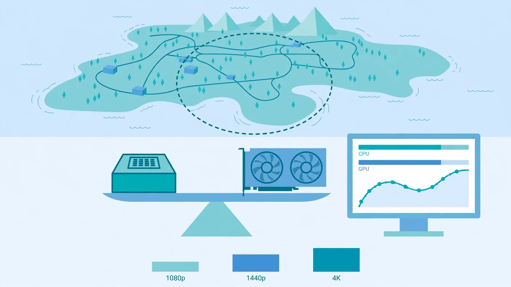

Warzone Bottleneck: Is Your CPU or GPU Limiting Your FPS?
The short answer to the Warzone bottleneck question is that it is usually your CPU at 1080p and your GPU at 1440p and 4K — but on the same PC the answer can flip between the drop, a quiet rotation and the final circle. Warzone is one of the most CPU-heavy shooters you can play: more than 100 players on a huge map, constant asset streaming and a long draw list keep the processor busy in a way most games never do. This guide explains why Warzone leans on the CPU, how to prove which part limits your frame rate in two minutes, which settings actually help, and whether your next upgrade should be a processor or a graphics card.

Warzone Bottleneck: The Short Answer
A Warzone bottleneck is usually a CPU bottleneck at 1080p and a GPU bottleneck at 1440p and 4K. At 1080p, especially on competitive settings chasing a high refresh rate, the processor sets the ceiling: it has to simulate the whole match before the graphics card can draw a single frame, and no graphics setting can speed that work up. At 1440p the graphics card starts sharing the load, and at 4K — or with high-resolution textures and shadows — the GPU is clearly the limit, which is the healthy pattern for a gaming PC.
But the short answer hides the interesting part. Warzone is not one workload: the drop, with every player alive and the whole map in view, is far more CPU-heavy than a quiet mid-game rotation, and the final circle hammers the processor again. That is why your frame rate can swing wildly in a single match even though nothing about your PC changed. Test in a real match, in a busy area, the way this guide shows you — a firing-range test will misjudge the bottleneck completely. Our CPU vs GPU bottleneck guide explains the general pattern; this guide applies it to Warzone specifically.
Why Warzone Is So CPU-Heavy
Warzone runs on Infinity Ward's IW engine, and its hardware profile is shaped by the battle royale format itself. Most shooters ask the CPU to track a handful of players on a small map. Warzone asks it to track more than 100 players, their positions, movement, ballistics and network state, across a map far larger than a normal multiplayer arena — every frame, for the whole match. On top of that, the game constantly streams gigabytes of map assets in and out of memory as you move, and prepares a long draw list of everything the GPU might need to render next. That preparation work lands on the processor.
Single-thread speed still governs the frame ceiling, because much of that per-frame work cannot be split across cores — one main thread has to finish before the frame can be drawn. That is why a fast six-core chip often beats a slower eight-core chip in Warzone, and why AMD's X3D processors, with their huge cache, consistently sit at the top of independent Warzone frame-rate tables: the cache keeps the data the CPU needs close by, so it spends less time waiting on memory. Our best GPU for Ryzen 7 7800X3D guide covers the chip that handles this workload best.
The GPU's job is mixed. Open sightlines across the map are easy work; dense urban areas, volumetric smoke and destruction effects are heavy. That mix is why Warzone feels GPU-bound in some spots and CPU-bound in others — and why a single average frame rate tells you so little about how the game actually feels. What matters for gunfights is the worst moment, not the average, and the worst moments are almost always CPU or memory moments, as our stuttering and 1% lows guide explains.
When the CPU Is the Limit in Warzone
The CPU is the limit in Warzone when the processor cannot finish its per-frame work fast enough, and the graphics card ends up waiting. The signs are consistent and easy to spot once you know them. Lowering the graphics settings barely changes your frame rate — the CPU does the same simulation work whether textures are on low or ultra, so the FPS stays stuck. Your GPU usage sits well below full load while one or two CPU cores sit near 100%. Frame rates are worst at the drop and in the final circle, and better in quiet stretches, because those are the moments with the most players and the most simulation to do. And the frame rate barely changes when you drop the resolution, which is the clearest proof of all: if the picture gets much simpler and the FPS does not move, the picture was never the problem.
Certain hardware makes a CPU limit more likely. An older quad-core, or a chip with weak single-thread performance, will cap Warzone long before a mid-range graphics card breaks a sweat. Background apps make it worse: a browser with dozens of tabs, a recording, or a stream running on the same cores steals the headroom Warzone needs. Our fix 100% CPU usage guide walks through finding and closing the worst offenders.
When the GPU Is the Limit in Warzone
The GPU is the limit in Warzone when the graphics card cannot draw the frame fast enough, and the processor is left waiting for it. The signs are the mirror image of a CPU limit. Your GPU usage sits near full load while the CPU has clear headroom. Lowering the resolution or the texture and shadow settings immediately raises the frame rate, because the picture was the problem. Frame rates are worst in dense urban areas and heavy smoke, and better in open ground — the GPU's load follows what is on screen, not how many players are alive.
This is the pattern you want. A GPU limit means your processor is fast enough and your money is going to the part that actually draws the game. It is also the easiest limit to fix without spending anything: turn down render resolution, shadows and volumetric effects, and the frame rate comes back. At 1440p and especially at 4K, most balanced systems land here. Our GPU bottleneck guide covers the full checklist for this pattern.
Warzone Bottleneck at 1080p, 1440p and 4K
Resolution is the single biggest lever on a Warzone bottleneck, because it changes how much work the graphics card does without changing the CPU's job at all. At 1080p, the GPU finishes each frame quickly, so the processor becomes the constraint for most builds — and at competitive settings with a high refresh-rate target, the CPU is the constraint on almost every build. This is why competitive players obsess over processors and cache: at 1080p high refresh, the CPU is the whole game.
At 1440p, the extra pixels give the GPU real work to do, and the balance shifts: most upper-mid-range builds stay in high-refresh territory, with the CPU and GPU sharing the constraint depending on the scene. At 4K, the GPU is the limit on nearly any realistic pairing. The practical takeaway is simple: if you play at 1080p, spend on the CPU; at 1440p, balance the two; at 4K, spend on the GPU. Our resolution bottleneck guide explains why the same pairing behaves so differently at each resolution, and our frame time guide explains why smooth frame delivery matters as much as the average.
The Two-Minute Test That Names Your Warzone Bottleneck
Guessing wastes money; a two-minute test does not. You need an overlay that shows GPU usage, per-core CPU usage and frame rate — MSI Afterburner with RivaTuner is the usual free choice, and the built-in Windows Game Bar performance widget works too. Load into a real match, drop into a busy area, and watch the numbers during a fight, not in the lobby.
- GPU near full load, CPU with headroom: GPU bottleneck. Lower the resolution or texture settings and the FPS rises. Your next upgrade, if any, is the graphics card.
- One or two CPU cores near full load, GPU waiting: CPU bottleneck. Lowering settings will not help much. Your next upgrade is the processor — or faster RAM, which feeds it.
- Neither part near full load, FPS still low: something else is capping you — a frame-rate cap, V-Sync, a power or thermal limit, or the game running on integrated graphics. Check the cap first; it is the most common false bottleneck in Warzone.
- Frame rate changes a lot when you change resolution: GPU limit. Frame rate barely changes: CPU limit. This is the fastest single check there is.
Run the same test twice: once at the drop, once in a quiet rotation. If the bottleneck flips between the two, your system is balanced and the game is simply uneven — the fix is settings and expectations, not a new part. Our how to check a PC bottleneck guide walks through the full version of this test.
VRAM and RAM: The Hidden Warzone Limits
Two limits hide behind the CPU-or-GPU question, and Warzone exposes both. The first is VRAM: the graphics card's own memory. Warzone's high-resolution textures are heavy, and when a card runs out of VRAM, textures spill into system RAM and the frame rate collapses into stutter, with textures loading late. That failure looks like a bottleneck, but no CPU or GPU upgrade fixes it — only a card with more memory does. Activision's own specs make the point: the minimum spec calls for 3GB of VRAM, the recommended spec for 8GB, and the competitive and Ultra 4K spec for 12GB. For a new card bought to play Warzone at 1440p, treat 12GB as the minimum and 16GB as the safer buy. Our VRAM guide covers how much memory each resolution needs.
The second hidden limit is system RAM. Activision lists 8GB as the minimum and 12GB as recommended, with 16GB for the competitive spec — but in practice, 16GB in dual channel is the realistic minimum for smooth play, because Warzone streams assets continuously while Windows, Discord and a browser all want memory too. A single 16GB stick in single-channel mode costs real frames and shows up as stutter and weak 1% lows. Two sticks in dual channel, running at their rated speed with the XMP or EXPO profile enabled, is the cheapest meaningful Warzone upgrade there is. Our single vs dual channel guide and XMP/EXPO guide cover both checks. Storage matters too: Activision requires the game on an SSD with over 100GB free, and a hard drive will stutter every time the game streams a new area.
Settings That Actually Fix a Warzone Bottleneck
Settings only help if they target the part that is actually limiting you, so check the bottleneck first and then change the right settings. For a GPU limit, the biggest wins are render resolution, texture resolution and shadow quality — in that order — followed by volumetric effects and particle quality. Dropping the render resolution below native is the single most powerful setting in the game, and upscaling (DLSS, FSR or XeSS) recovers much of the lost image quality while keeping most of the frame-rate gain. Our DLSS and frame generation guide explains how upscaling shifts the load between CPU and GPU.
For a CPU limit, graphics settings barely matter, so do not waste time turning everything to low and wondering why nothing changed. The settings that help a CPU limit are the ones that reduce the processor's work: turn off ray tracing if your version of the game offers it, and cap the frame rate slightly below your ceiling so the CPU stops chasing frames it cannot deliver. Close background apps — a browser, a recording, a stream — before you blame the hardware. And check the easy traps: V-Sync or an in-game frame cap, an outdated graphics driver, and the game accidentally running on integrated graphics instead of your dedicated card. Activision's own performance guide recommends keeping drivers current and playing on a wired connection, because network lag and hardware limits feel similar in a firefight — our lag vs low FPS guide shows how to tell them apart.
Shader Compilation, Drivers and Other Usual Suspects
Warzone has a few performance traps that look like bottlenecks but are not. The biggest is shader compilation: after a major update or a driver change, the game pre-compiles shaders, and until that finishes you get hitching and stutter that has nothing to do with your hardware. Let the shader step finish before you judge performance — our shader compilation stutter guide explains what it is and how to reduce it.
Drivers are the next suspect. Activision publishes a recommended driver version with each season, and an old driver can cost frames or cause crashes on a new patch. Update the driver, and if a new driver makes things worse, roll back one version rather than chasing settings. Thermal throttling is the third: a dusty cooler or a laptop power limit will cap the CPU or GPU below its rated speed, which reads exactly like a bottleneck on the usage bars. Check temperatures alongside usage — if the CPU is hot and slow, cleaning the cooler is the fix, not a new processor. Our thermal throttling guide covers that check.
Should You Upgrade Your CPU or GPU for Warzone?
Upgrade the part the two-minute test names — never the other one. If the test shows a CPU limit at 1080p, a faster graphics card buys almost nothing: the processor still sets the ceiling, and the new card waits just like the old one. The right upgrade is a faster CPU with strong single-thread performance and plenty of cache, or — far cheaper — faster RAM in dual channel with XMP or EXPO on. If the test shows a GPU limit at 1440p or 4K, a faster card is the right spend, and the CPU you already own is probably fine.
Check Activision's official specs before you spend anything. The recommended spec for 60 FPS at high settings is a Ryzen 5 1600X or Core i7-6700K with 12GB of RAM and an RX 6600 XT or RTX 3060, while the competitive and Ultra 4K spec steps up to a Ryzen 5 5600X or Core i7-10700K with 16GB of RAM and an RX 9070 XT or RTX 4080/5070. Those tiers are a useful sanity check: if your hardware is below the recommended tier, the bottleneck is the hardware, not the settings. Run any upgrade through the PC Bottleneck Calculator first, at the resolution you actually play at, and read its methodology page so you know what the estimate means. Then verify after the upgrade with the same two-minute test — if the GPU now sits near full load and the frame times are steady, the money went to the right part.
Free PC Bottleneck Calculator — Estimate CPU and GPU balance for your resolution and workload: check whether your CPU, GPU or VRAM is the slow half of the frame on the PC Bottleneck Calculator (see its methodology page) before you buy a new part for Warzone.
Conclusion
A Warzone bottleneck is usually a CPU bottleneck at 1080p and a GPU bottleneck at 1440p and 4K — and on the same PC it can flip between the drop and the final circle, because Warzone is the rare shooter that hammers the processor, the graphics card and the memory all at once. Prove which part limits you with the two-minute test before you change anything: if the frame rate barely moves when you lower the resolution, the CPU is the limit; if it jumps, the GPU is. Fix a GPU limit with render resolution, textures and shadows; fix a CPU limit with a faster processor or faster dual-channel RAM, not with lower graphics settings. Keep 16GB of RAM in dual channel, 12GB of VRAM or more for 1440p, drivers current and shaders compiled, and upgrade only the part the test names — that is how you spend money on frames instead of on a bottleneck you never had.
Frequently Asked Questions
Is Warzone CPU or GPU intensive?
Both, but CPU first at 1080p. Warzone's battle royale format keeps the processor busy simulating more than 100 players, streaming a huge map and preparing a long draw list, while single-thread speed caps the frame ceiling. The graphics card shares the load at 1440p and becomes the main limit at 4K or with high texture and shadow settings.
Why is Warzone using 100% CPU?
Warzone uses 100% CPU when the processor is the limiting part of your system. The game tracks a whole match of players, ballistics, physics and network state every frame, and on a weaker or older CPU — especially one with few cores or slow single-thread performance — that work fills the processor before the graphics card is fully loaded. Background apps, shader compilation after an update, and a CPU that is simply too slow for the graphics card all push usage to 100%.
Why is my GPU usage so low in Warzone?
Low GPU usage in Warzone usually means the CPU is the bottleneck: the graphics card is waiting for the processor to finish each frame, so it never reaches full load. Check it with the two-minute test in this guide — if lowering the resolution barely changes your FPS, the CPU is the limit. Other causes include a frame-rate cap, V-Sync, an outdated driver, or the game running on integrated graphics instead of your dedicated card.
How much RAM do you need for Warzone?
Activision lists 8GB as the minimum and 12GB as recommended for 60 FPS at high settings, while the competitive and Ultra 4K spec calls for 16GB. In practice, 16GB in dual channel is the realistic minimum for smooth play, and 32GB is the comfortable pick if you run Discord, a browser or streaming software alongside the game — Warzone streams gigabytes of assets continuously, and single-channel or slow RAM shows up as stutter and weak 1% lows.
Does lowering the settings fix a Warzone bottleneck?
Lowering settings only fixes a GPU bottleneck. If your CPU is the limit, dropping texture quality and shadows barely changes the frame rate, because the processor does the same work regardless of how pretty the picture is. Lowering the render resolution is the one setting that directly tests which part is limiting you — and for a CPU limit, the real fixes are a faster processor, faster RAM in dual channel, or accepting a lower frame-rate target.
Sources
Official documentation referenced in this guide:
- Activision: PC System Requirements for Call of Duty: Warzone (minimum, recommended and competitive/Ultra 4K specifications)
- Activision: Improving Lag and In-game Performance in Call of Duty: Warzone (drivers, wired connection, bandwidth)
- AMD: Ryzen 7 7800X3D Processor Specifications (cores, cache, boost clock)
- Intel: Locate and Resolve CPU-GPU Bottlenecks (per-core CPU usage vs GPU usage patterns)